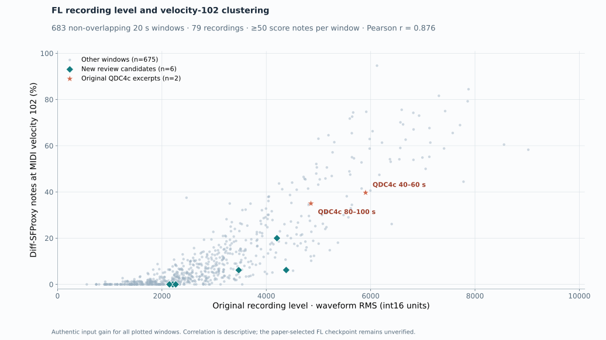

Choose an FL excerpt
Compare 20-second passages from different recordings. Each method uses its own recovered 5-second guitar checkpoint consistently across all excerpts. The colors show the MIDI velocities directly, without display-only rescaling.
The original recording has no verified note-velocity labels. BSSL and BSTL compare each rendered excerpt with that recording; they are excerpt scores, not the paper's dataset-level results. “At 102” shows the share of notes predicted at velocity 102, which was unusually high in the retired QDC4c example.
Investigating the retired QDC4c velocity-102 cluster
The archived experiment MIDI already shows the QDC4c cluster, so it was present before this website. Across 683 FL windows, louder source recordings tend to yield more velocity-102 notes with this recovered checkpoint (Pearson r = 0.876). A diagnostic half-gain rerun reduced the clustering. All six published examples below use the original recording level and unchanged MIDI predictions.

Loading excerpts…